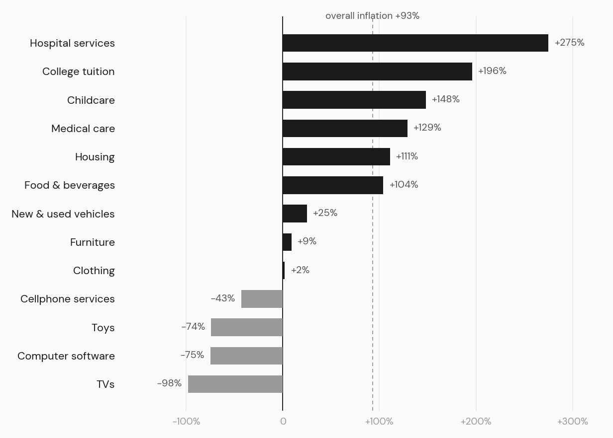
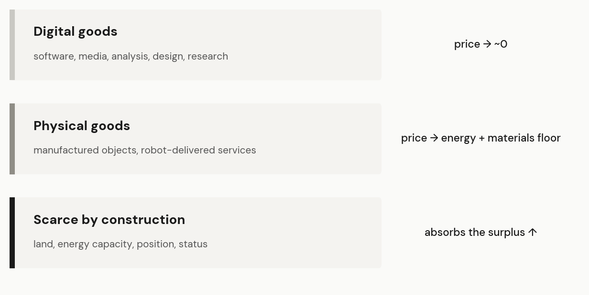
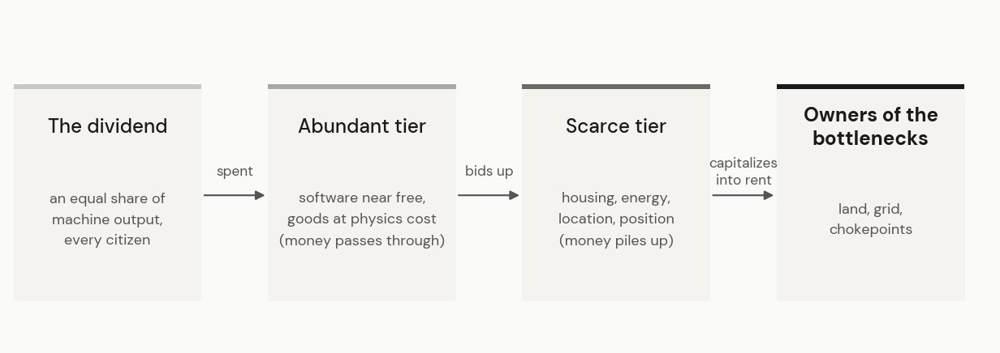

What economic life looks like if every promise of the AI leaders comes true.
Ana wakes in a one-bedroom she can barely afford. Her dividend arrived overnight, the equal share every citizen receives, and most of it is already claimed: rent first, then a utility bill that rises every time the neighborhood's grid allocation tightens. The machines made everything cheap except the space to live in.
The rest of her morning costs almost nothing. The tutor teaching her daughter Mandarin, the doctor reading her bloodwork, the film scored overnight to her taste, all machine-made, all priced like air. The furniture in the room was printed for the cost of its materials.
Her shift starts at ten. She pours coffee at a shop that advertises a human behind every cup, and the certification seal by the door is why a cup here costs eight times the machine cafe next door. Not all customers are paying for a perfectly brewed coffee with machine precision. Many prefer a handed cup by someone who might remember their name.
In the evening she buys the same premium she sells. Her yoga instructor is human, no better than the free one in her glasses, but worth it to her anyway. Her health is excellent according to the advanced diagnostics, but wellbeing is different.
At eight she joins the city zoning hearing, where a developer wants to build forty residential units and an electric substation two blocks away. Ana has spent six years saving toward a stake in her own building, so she votes no. She blocked the supply that might have helped her buy a home.
Ana's Tuesday is the machine economy's best case, exactly as its builders promise it. Machines handle the work, mental and physical. Everyone shares what the machines produce, and money, in the most quoted versions, stops mattering. The heads of the major AI labs have sketched this future in essays, interviews, and keynotes, and the promise already carries real weight. It anchors policy debates, shapes how young people choose careers, and justifies trillion-dollar investments in chips and data centers.
The argument about that future is mostly about whether the machines will get good enough and whether any government could share the gains fairly. Both questions are speculative. Neither tells us what daily economic life looks like after the machines arrive. So this essay grants everything. The machines arrived, the political systems survived, and every citizen received an equal share of the cornucopia. Ana lives in that world, and she is still struggling.
The AI promise cannot explain Ana's Tuesday. The economic laws do not disappear in a world of abundance. Abundance does not end scarcity but relocates it. Prices move away from everything machines can copy and concentrate on everything they cannot make more of. Read Ana's day line by line and it becomes a map: what turns free, where the dividend goes, what work becomes, who accumulates wealth, and what governments spend their days deciding.
The economist Mark Perry maintains a chart that the Federal Reserve has passed around internally and that he calls the Chart of the Century. It tracks everyday goods and services in the American consumer price data since January 2000, and it splits the economy in two.

Prices in one half collapsed. Televisions fell 98 percent over twenty-five years, software 75, toys 74, cellphone service 43. Prices in the other half climbed through the same quarter century: hospital services up 275 percent, college tuition up 196, childcare up 148, all far above the 93 percent rise in overall prices.
The chart usually circulates as an indictment: healthcare is broken, college is a racket, someone should fix the red bars. Read it instead as one mechanism, partially complete experiments. Everything whose price was mostly human labor, labor that could be automated, digitized, or sourced from anywhere on earth, became steadily cheaper. Everything anchored to land, to credentialed professionals, and to position kept climbing. One half of the chart shows where labor content could be squeezed out of prices. The other half shows where it could not be, or was not allowed to be. William Baumol named the first half of that pattern in the 1960s: human-intensive services get pricier as productivity rises everywhere else, because they compete for the same workers. Licensing, accreditation, and restricted supply do the rest.
A machine economy of the kind the AI industry promises would simply finish this chart. A future is a bipolar world where AI runs the utilities, while humans produce and consume experiences.
AI's primary promise is that it is a better labor, physical or intellectual, than humans. Consider a haircut delivered by a robot. Its price is inference (robot perceiving your head and planning each cut) plus actuation (electric motors doing the cuts) plus amortized hardware (initial purchase price) plus electricity. Each of these components are driven by physics and can be optimized for efficiency. The barber's wage will drop, until it reaches physical limits.
Seen as labor content plus everything else, the economy sorts into tiers.

Digital goods sit at one extreme. A copy of a program, a song, a diagnosis, a design carries almost no matter and almost no energy, so once machines produce them, their prices fall toward the cost of computation, which approaches zero.
Physical goods deflate too, but they land on a floor. I spent ten years at Sun Microsystems designing UltraSPARC microprocessors, in an industry that runs on a discipline the software world never had to learn: computation is physical. A chip's performance is capped by how much power you can deliver onto the silicon and how much heat you can pull back off it, through air or water, and no design cleverness repeals either limit. The chips training today's AI models operate under the same two ceilings. The same holds for everything with mass. AI can strip the labor share out of a car, a house, or a meal. The lithium, the steel, and the kilowatt-hours stay in the price, because they are the price. What remains, after the machines take over the work, is physics.
And then there is a third tier, where deflation is impossible because it is inherently scarce. Some of it is physical, set by the planet: land in the places people want to live, capacity on the electrical grid, lithium in the ground. Some of it is constructed, set by people: patents, permits, zoning, licenses, the toll a platform charges because it owns the door. And some of it is definitional: the corner table at the restaurant, the house on the hill with the view, goods where producing more is a contradiction in terms (Ferrari, Rolex). Real prices carry more than labor and physics, and the capital costs, market power, regulation live in this tier. The machines remove the labor. This tier remains, and it decides most of what follows.
One industry has already arrived at its end state, and it sits in the deflating half of the chart. Copying software has been effectively free for thirty years, which makes the software economy a completed trial run for what happens when a valuable good becomes infinitely reproducible. It produced three key insights.
The first matches the utopian view. Consumption has exploded. A teenager with a phone now uses more software in a day than a Fortune 500 company deployed in 1990, most of it at a price of zero. The abundance is real, and is accessible to everyone on earth. I watched one round of it from the inside. Sun helped build internet backbone by selling highly engineered proprietary servers, powered by UltraSPARCs and Solaris. Then Linux, free to copy, made the operating system a commodity, cheap Intel chips and distributed computing did the rest, and compute once rationed to corporations became available to anyone.
The second insight is stranger. Total household spending held firm while its destination changed. The money that cheap software and cheap goods freed up flowed across the chart into housing, healthcare, and education, and helped bid those prices up. The two halves of Perry's chart are one story. Abundance in one tier financed the bidding war in the other.
The third insight is an interesting one: zero cost to produce doesn't mean zero price to consume. When marginal cost to produce became zero, software pricing formed around whatever kept price above marginal cost. Microsoft's came from the default installed on every new PC and the lock of its file formats. Oracle's came from switching costs and license law: once a company's data lives in the database, leaving costs more than staying, and audit teams enforce the terms. The consumer internet ran the same play with different chokepoints, the default browser and a search box (Google), the app-store toll booth (Apple), the advertising auction (Meta). The copy was always free to make. The business was whatever made it scarce anyway, or made leaving expensive.
Herbert Simon, the Carnegie Mellon polymath, predicted where those fortunes would sit in 1971. Information consumes the attention of whoever receives it, he observed, so a wealth of information creates a scarcity of attention. Software supply grew without limit while human attention stayed fixed at sixteen waking hours per person. I learned the same lesson from the losing side. Nimeyo, the company I founded, built enterprise chatbots customers found valuable and paid for, and it still could not scale, because we never owned a distribution channel that drove attention. The product cost almost nothing to reproduce. Reaching people was the expensive part, and the scarce one.
The software experiment gives an important verdict. The software era delivered both abundance to the consumers and extreme concentration of wealth for the producers, and this test case could be prescient to the machine economy of the future.
Now let's return to Ana's world and trace the money. The dividend is generous, and it arrives denominated in the abundant tiers. Digital experiences cost nothing. Healthcare is mostly low-cost. Manufactured goods cost their physics. So the dividend flows through those tiers with little friction and lands where spending still buys something contested: housing, location, energy, access. Against a fixed stock, new money can do only one thing, and that bids up the price.

Henry George described this dynamic a hundred and fifty years ago. George was a California journalist during the railroad boom, and the puzzle that consumed him was why spectacular progress arrived alongside deepening poverty. His answer, published in 1879 in Progress and Poverty, one of the best-selling books of its century, was that the gains of progress get capitalized into whatever cannot be reproduced. Progress raises rents before it raises wages. The landowner collects what the railroad creates, not the laborer.
The machine economy is an extreme version of George's theory. A universal dividend, spent into a fixed stock of land and grid capacity, converts itself into rental income for whoever owns the land and the grid. Distributing the abundant goods equally, which we assumed from the start, ends up funding the bottlenecks.
To make it concrete: give every person in a city an identical income and leave the housing stock fixed. The house on the hill still goes to auction, and the auction still clears at whatever price exhausts the bidders. How evenly the money was distributed makes no difference to the clearing price.
The natural reply is that housing supply is not actually fixed, and building more should absorb the dividend. Partly right, but new supply has to get through permits and zoning laws and Ana's resistance. Though many houses can be built, there is still one house on the hill.
The strangest feature of the end state involves work itself. Human labor stays relevant but the application changes. It stops being an input and becomes the good people purchase because they want it, the way they buy wine or music.
That human-as-a-good premium already exists, priced and visible. People pay more for handmade furniture than for machine-made pieces that are often better built. They pay for live performance over a recording, for a human therapist over a manual with the same advice, for a sommelier's attention over a rating that predicts the wine just as well. In the end state, this premium stops being a niche and becomes the labor market. Machines produce output at energy cost. Humans get paid for being human at someone, which no factory can scale.
The obvious objection says humanoid machines will one day become indistinguishable from the person across the table, and the premium should collapse. That test has been run many times, and the verdict is on the side of humanity. In 1945, Dutch police arrested the painter Han van Meegeren for treason, for selling a Vermeer to Hermann Göring during the occupation. His defense was that there was no treason because there was no Vermeer. He had painted it himself, and he proved it by producing another one under guard. The canvas Göring bought never changed, molecule for molecule, yet its value collapsed.
Chess shows the same result. IBM's Deep Blue beat the world champion Garry Kasparov in 1997, engines left human players permanently behind soon after, and today the strongest chess on earth is played in computer championships that nobody watches, while human chess is drawing the largest audiences in its history. In both markets, buyers are paying for the object's history, for who made it and how, and no capability can counterfeit history. A Turing test measures indistinguishability. Markets price origin.
The objection is right about one thing. The premium pays only while human origin can be verified, so the real threat to it is fraud. Markets have solved this before: hallmarks stamped into silver, appellations on wine bottles, certification audits behind the word organic. Authenticity became a priced good with inspection infrastructure around it. The end state will need the same infrastructure. Expect proof of human origin to become a service, and expect the label certified human to do the economic work that handmade does today.
The same scarcity rewrites the government's job description. When the contested goods are watts and acres, the decisions that matter allocate them: which power projects clear the years-long queue for permission to connect to the electrical grid, which parcels get zoned for data centers and housing, who receives the siting permits and the spectrum. Fiscal policy, the great lever of the industrial era, loses its centrality. Allocation takes its place.
Current politics has this backwards. It treats the AI question as a question about transfers, about who gets a check and how large. In the world we granted, the transfer was the easy part. We assumed it away in the first paragraph, and every hard problem here survived the assumption. The fights that remain are fights over who may build what, where, drawing on which grid. Post-scarcity politics is land-use politics.
Read her Tuesday again. The apartment is expensive because land stayed scarce, and the utility bill climbs because grid capacity did. The tutor, the doctor, and the film cost nothing because machines reproduce them at the cost of computation.
The coffee costs eight times the machine cafe's because her customers are buying a human, and the yoga class holds its price because human attention became a consumption good. The hearing matters because no dividend can manufacture another parcel of land or another unit of grid capacity. Ana, six years into saving for a stake in her building, votes like an owner.
She has everything the machines can make. She still starves for everything they cannot. That is the economic system of the best case, and a single mechanism runs through every part of it. The machine economy does not eliminate scarcity. It concentrates scarcity in whatever cannot be reproduced, and daily life gets repriced around it.
The promise that money will stop mattering holds for everything except the things people care about most. Utopia and rentier economy are not opposites. The software era delivered both at once, and the machine economy scales both at once.
One more reading. Delete two details from Ana's Tuesday, the dividend and the certification seal. The rent that swallows the paycheck. The free tutor in the phone. The eight-dollar pour with a person attached. The paid class a free app could replace. The hearing where a small owner blocks new supply. That is a Tuesday in 2026. The best case is not too far away from today.
Everything here rests on one assumption: that the physical side of the best case is already built, the data centers running, the grid expanded, the watts in place. It is not, and Ana just voted against one expansion.